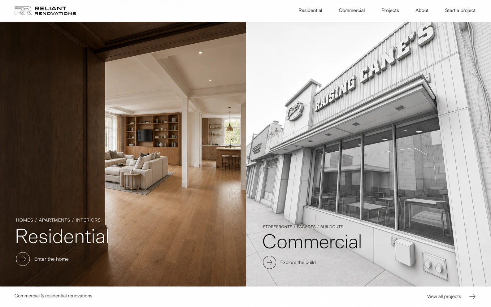
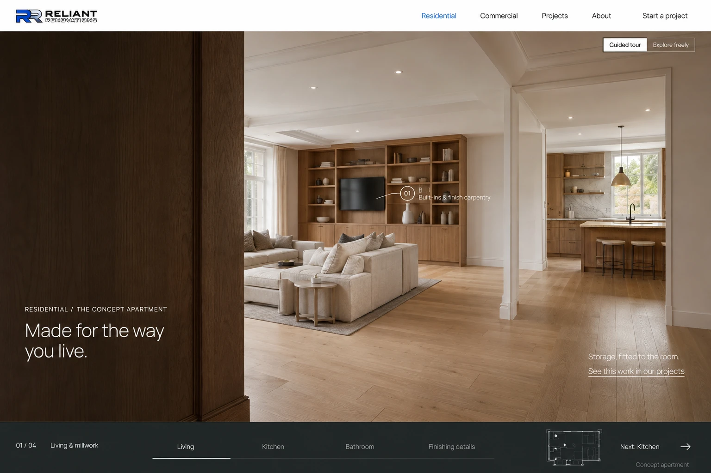
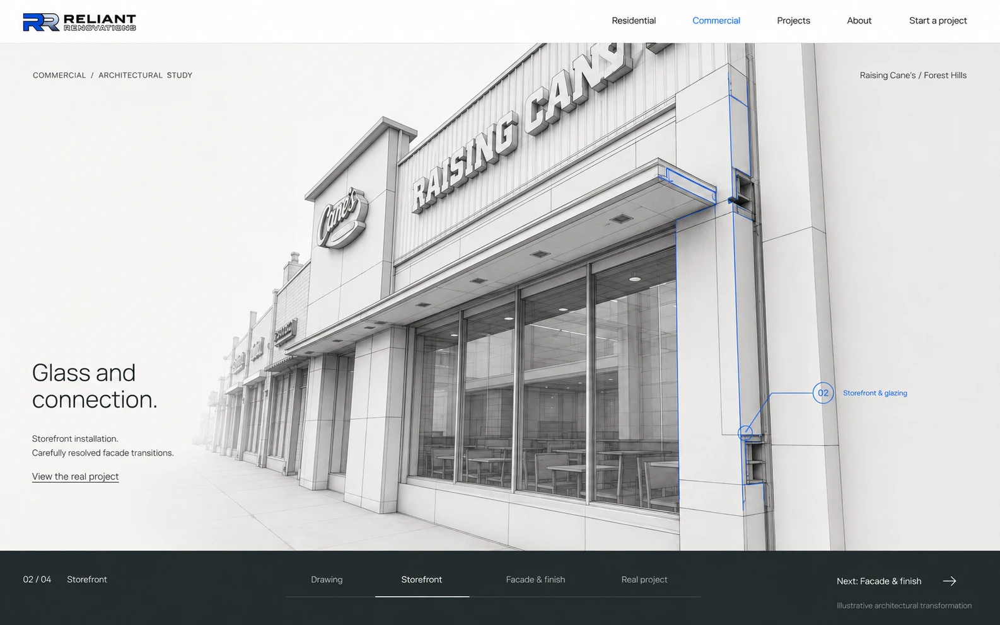

Proposed direction / September 2026
A website you
move through.
The architecture fills the screen. Movement reveals the work. Residential and commercial have distinct experiences within one clear, consistent website.
Three visual references and a whole-site blueprint. These are proposed designs; the controls pictured in the artboards are illustrations. Open any image to inspect it at full size.
01Two clear entrances
Open full-size study ↗{kind=link}

The first decision is obvious.Residential and commercial are equally visible. The approved CAD logo draws briefly in the opening brand treatment while both destinations remain available.
Proposed motionChoosing a division moves into that space. The global navigation and direct project links remain available throughout. The static layout works without playing an entrance animation.
02A home that explains the services
Open full-size study ↗{kind=link}

One connected, imagined apartment.Entry, living room, kitchen, bedroom and bathroom each reveal relevant services. The same model supports a guided story and choosing your own route. Every service can link to real completed work.
Proposed motionThe camera travels at eye level through actual door openings. Selecting millwork moves closer to the cabinetry; selecting the kitchen takes a walkable route there. Room and chapter labels in this early artboard are provisional.
03The work, through the drawing
Open full-size study ↗{kind=link}

Scale, material and construction detail.A shaded architectural model reveals the storefront, glazing, facade panels and finish transitions. One selected component and one service explanation hold attention at a time.
Proposed motionScroll or select a chapter to move from the drawing to the storefront and facade details, then the real project photograph. The CAD interpretation is illustrative; the final case study records Reliant’s documented scope.
The whole website
One visual language.
A clear purpose for every page.
White navigation, precise sans-serif type, restrained cobalt selection states and a graphite chapter rail connect the site. Photography and the space supply the depth. Existing page addresses and project publishing controls remain part of the plan.
Home
Two architectural entrances; a brief CAD brand introduction; direct access to the portfolio.
Visitors can choose their division immediately, including while the logo draws.
Residential
An eye-level apartment journey with Guided tour and Explore freely. Readable service information follows the experience.
Kitchen, bathroom and whole-home renovation paths lead to genuine case studies. Basements and exteriors have their own project links.
Commercial
A full-viewport drawing experience with four chapters: Drawing, Storefront, Facade & finish, Real project.
Other commercial capabilities are supported by their relevant actual projects. Cane’s exterior scope stays accurately bounded.
Projects
A photography-led index with persistent Residential and Commercial filters, readable project names and locations.
Visitors can browse the work directly. Viewing a tour is never required to find a project.
Project details
Real photography fills a restrained viewer. A consistent edge rail supplies image navigation, project name, scope and inquiry access.
Every case study retains its own page, documented scope, accessible gallery and links to related work.
About
A quiet company story with real photography and concise process information, using the same typography and precise spacing.
Trust comes from documented work and factual company information.
Contact
A focused inquiry page with a clear residential or commercial context and an easy-to-use form.
The site’s contact destination stays visible from every experience and project page.
Mobile
Touch-first room destinations and a compact chapter rail. The home presents both divisions clearly. Readable service text and project links remain outside the scene.
Motion
Camera travel has a destination and a reason. Reduced motion uses direct changes of view. Ordinary page scrolling resumes beyond the experience.
Search & access
Services, headings and project links render as HTML. The scene enhances those pages. Existing URLs, metadata, publication rules and the prelaunch indexing gate are preserved.
What the next build needs
A connected apartment model with consistent doorways, furniture, lighting and valid camera routes is the first production asset. The present panorama viewer does not supply that geometry. The commercial model also needs identifiable facade components for the proposed close-up and assembly views.
These AI-generated images establish art direction. Production will use the approved original transparent logos and CAD monogram, live HTML text, and real photographs for the portfolio. The existing public site has not been changed by this study.
Full experience blueprint3D asset feasibilityImage prompts & references